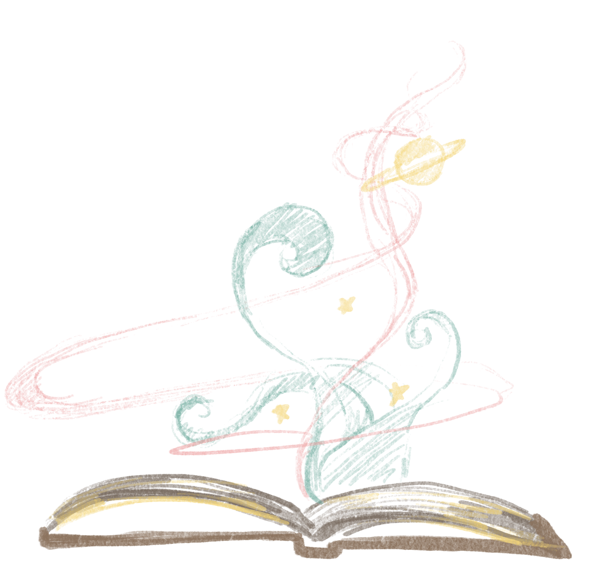

Welcome to the universe of stories. Explore around. Each constellation has their own story.
The Story Collector
As a child, I’ve always been fascinated by the night sky. I’d wonder about the creatures that live there. I’d wonder if they are so big that to them we are simply a speckle of dust in their closet. I’d wonder if they’re actually not humongous but just really really far away, so far that to them we are also a speckle in the sky. I wonder if they’re lonely like me, wandering around a barren land, or if they have companions, like the ants I see crawling around their hills.
A long time ago, so long that I don’t know if it is myth or reality, or if it was a combination of both that grew from being passed down from mothers to daughters after generations and generations, there were more creatures like us on this planet. These creatures loved, and laughed, and went on adventures together. They also fought, both for and against each other, and built beautiful and terrible things. They explored and understood their world and that of the stars, and told stories until their understanding of their world could no longer prevent the destruction that followed. Only a few were left afterwards, and, of those few, they kept the tradition of storytelling on, hoping that, one day, we could return to claim the world and the stories that we told.
Some of these stories talk about a world that is long gone, others speak of worlds that couldn't have existed, but my favorite ones are stories that tell of the stars. I loved thinking about these places that exist so differently from mine, about the creatures that inhabit these worlds, and the worlds they inhabit. When I was younger, mother and I would tell these stories together, building and carving out worlds and imagining the lives of creatures so close yet so far from us.
But now it’s just me, with the stars for company, and it’s up to me to tell their stories.
The Mushroom House
They say that, deep in the forest, there is a house made of a giant mushroom. This story has been passed down from generation to generation in Willow’s pre-school, the older kids saying that only the daringest child could find this house. That means that, naturally, it is time for Willow to go on an adventure.

Willow walked, and walked, and walked. She resisted the feeling of boredom by noticing the tiny creatures roaming the forest. After a while, she could see a scattering of tiny mushrooms, and the smallest footprints. Who could they belong to? A rabbit? A mouse? Willow decided to follow this trail.

After another while, as Willow got more and more hungry, the tiny footprints became larger and larger. The mushrooms became large enough to be bite-sized snacks, and Willow continued going along the trail, eating mushrooms as she went. After so long that all the mushroom snacks ran out, she came to a clearing where she saw it: the largest mushroom she had ever seen. It towered above her with rows and rows of windows. Someone definitely lived there. Willow approached the house, excited to make a new friend.

The door of the mushroom house opened immediately after Willow knocked, but, after going in, she saw no one in sight. What she did see, is that everything in the mushroom house was mushroom shaped. From the mushroom table to the mushroom stool to the mushroom bed to the mushrooms laid out as snacks on the table, there was not a single human being. The ceiling of the house was impossibly tall, and the walls empty save for the windows that nobody could reach.

Willow decided to wait for whoever lives in the mushroom house to come back, so she ate some mushroom snacks on the mushroom table while sitting on the mushroom stool, and took a nap on the mushroom bed. When day turned to night and still no one was there, Willow was ready to leave.

When she turned the mushroom handle on the door of the mushroom house, she realized that it was locked. Willow could no longer leave. Slowly… she heard the paddling of tiny feet, and saw a swarm of tiny mushroom people. The footprints that took her here now make sense. The mushroom people told Willow that the mushroom people built the mushroom house, and only a human child can stop them from turning back into mushrooms.
“You can’t leave you see… until the next child finds the mushroom house” they said.

And so Willow stayed with them, living off mushroom snacks on the mushroom table and sleeping in the mushroom bed, and hanging out with her mushroom friends when they come out at night. The mushroom handle on the door never turned. Not for ages and ages and so long that Willow sometimes forgot it existed altogether.
One day… they all felt it. Another child came looking for the mushroom house. Willow could hear their footsteps, and then a tentative knock… but before Willow could welcome them, she woke up on the patch of soil by her human house. Not a mushroom in sight. Willow heard her mom call out to her for dinner:
“And don’t even think about eating the mushrooms in the garden, we don’t know if they are edible or not!”
The Fairy
Florence has been anticipating being the first fairy in 1000 years to enter the human world ever since she was a fairy pup. She woke up bright and early, before the earliest lighting bud’s daily ritual of illuminating the entire fairy kingdom in glowing light, when the world is just her and the thousands of plants in the sky illuminated by the silvery glow of the Heart River. She took one last moment to appreciate the lighting of the Fairy Kingdom as her neighbors stirred between this world and the dream realm. Florence had always loved the lighting bug’s daily ceremony.

Florence snuck out before her parents awoke. Florence must tread the rest of her path alone, like all those who ventured to the human world before her. A tiny shadow in her dandelion-shaped heart knows that she might die alone as well, but the lure of adventure, of seeing a world covered by stars rather than plants, a world illuminated by a firefly ball of light rather than lighting buds, a world with humans and stories and adventure has captured Florence’s very being ever since she first learned of this world beyond her own.

Taking nothing but a clove-leaf knapsack of pollen and her lilypad boat, Florence set out on the Heart River, wishing upon her dandelion heart it would take her to where she needed. Florence flowed and flowed down the river, winding far away from her fairy village, far away from where the lightning buds dwelled into the lands of fairies that lived in eternal darkness. Florence no longer knew how many days or nights or heartbeats she traveled down the Heart River, her only knowledge of passage of time being the dwindling knapsack of pollen. Even so, Florence can’t tell if she traveled for weeks or months or even years.
Florence’s boat stopped at a shore. After stepping out of her lilypad boat, the Heart River whisked away her boat back to the direction of her home, no doubt serving as confirmation to her parents that Florence has indeed ventured to look for the human realm. The shore is filled with tiny circular plants, like little flat mushrooms dotting her path. Florence followed this dotted path deeper into the dark forest, as the little plants grew in size, larger and larger until each circular leaf is the size of a lilypad boat. The trees around Florence grew in size as well, with each reaching all the way through the plant ceiling, the vines around the trees so large that each vine looks about as thick as Florence’s whole body, and each leaf the size of an entire house in Florence’s village. Florence followed this path until all she could see was a dim light in the distance.

At the end of this path stood a stone owl, illuminated by a glowing flower. Florence stared up at the giant stone bird. Does this owl hold the key to the human realm? How many World Walkers before her have reached this point?

Florence touched the owl, and was immediately transported to the strangest place she’d ever seen. In front of her, there stood several fairies, all wearing the same chrysanthemum bud Florence picked for herself that morning, all wearing the same faces, all looking at her. When Florence looked up, rather than the plant sky that Florence is so familiar with, it again is all the fairies, but this time as though they are looking up at her. Whenever Florence moves, these fairies also move. Whenever Florence made an expression, the same expression lined their faces. When Florence asked them a question, their mouths moved at the same time, but did not respond. Florence reached out to one fairy, and she saw all the fairies reach out as well. Just when they’re about to touch, Florence’s figers hit the smoothest surface she’s ever felt. It’s time for the next step of her adventure.
The Monster
Halpie’s loves prancing by the lake on a day summer in his forest. The creatures of the forest would come out and play with him, now that it's still warm and his shadow isn’t out to scare them away. Halpie would splash in the water, enjoying the colors reflected by the water, the sounds of creatures going about their days, the smells of water and grass and leaves and critters, and the textures of the water on his tentacles. He would munch on the grasshoppers in the forest bedding while listening to the freshest gossip from the birds.

It seems like what the ravens cared about today is the wind chimes the villagers put up, shiny, they crowed, noisy, the sparrows added. Halpie wanted to learn about the wind chimes, is it something they’re putting in his honor? He likes things that make noises, like the bonfire songs the villagers sing, but his shadow prefers the silence of the night. Anyways, time for Halpie to visit the village again.
Halpie waited until the animals of the forest went to sleep before making his way to the village. The tentacles of his shadow grasping at every living thing spooks the deer and squirrels and such, and the red eyes that emerge doesn’t help as well. At least in the forest it is so dark that no light exists to cast Halpie’s shadow, but he’s still self conscious every time some lingering light allows his shadow to emerge, which then swallows an animal whole. Halpie knows the animal will emerge the next morning, shaken and out of it but fine, but it takes a month before they’d be friends again.

Halpie heard the windchimes before he saw the light of the village. He can feel his shadow shrinking back into himself. That’s so smart, he thought, the villagers found a way for them to be friends. Halpie knew he made a bad impression the last time he went into the village, but now that his shadow is hiding due to the chimes, he’s sure they’ll all be friends.
Something felt wrong the moment Halpie stepped into the light of the village. He’d expected a bonfire and music and children playing and carving pumpkins, like the last time he’d visited, but instead, there were humans standing with spikes by the forest clearing.

“That’s the monster!” One of the humans shouted. Halpie was so startled he looked behind him, wondering what creature followed him into the village, but he saw nothing. Before he registered anything else, a net was thrown over Halpie, knocking him to his side, his shadow straining to get free over the sound of the windchimes. But I just want to be friends… Halpie thought, dejectedly, as he lost consciousness.
The Kingdom of Stars
They say all the stars in the night sky are born from stories, but my favorite one has to be that of the twin stars shining brightest in the sky.
Once upon a time, when the stars were merely planets in the galaxy, there lived a kingdom with a king and a queen who loved shiny things. In this kingdom, the rulers adorned every inch of the royal castle with precious jewels, stones, and diamonds, and hired 1000 groundskeepers to polish every surface. If you strike a match in one corner of the castle at night, the light would bounce all the way to the other end. In the day, the castle would shine so bright that it would look like a star, so much so that the king and queen were well known in the galaxy as the Kingdom of Starlight.
Visitors from all over would bring shiny tributes - a mirror that can capture and reflect the light of any sun, a powder to make an entire river glow without moonlight, spools of yarn that sparkles in the deepest of darkness… These intergalactic tributes adorned every nook and cranny of the Kingdom of Starlight, and, the more the king and queen collected tributes, the more visitors would visit and bestow even more.
One day, a rare wizard came upon the planet, and, she too, offered a tribute.
“I have studied the witchcraft of stars for millennia, and can give you the brightness of a thousand stars, only if you want it.”
Never in their inconsiderable age had the king and queen considered anything this shiny. Not when they were given a fragment of a dwarf star, not when their planet now glows so brightly it gets mistaken as their sun, not when they thought they had reached the limits of what shiny could be. But after all, stars are the shiniest of them all, and a thousand stars must be shinier still. They agreed to the gift.
The wizard raised her hands to their sun and casted her spell. The king and queen started glowing, and continued to shine, first more than the shiny objects adorned in their throne room, then more than the light of the sun coming through the windows, and finally so bright that we cannot see one from the other, so bright that the entire sense of sight no longer exist in the Kingdom of Starlight. The shine of the king and queen washed out all colors and shadows as they glowed with the brightness of a thousand stars. The king and queen are now so bright that all the inhabitants of the Kingdom of Starlight lost their sight, as did any visitor who happened upon it. For a while after, the Kingdom of Starlight became known as the Kingdom of Darkness, as the brightness of the king and queen tore through the very fabric of their solar system. The brightness created its own gravitational field, dimming the stars in their corner of the galaxy.
If you look up at a clear sky at night, you can still see the king and queen of this distant kingdom, sitting next to one another, shining with the brightness of a thousand stars.
The Time Loop
It is time, the one exciting night of the cycle. Gizem has been anticipating a change ever since the last time they went to the human world. Sure, having one less tail afterwards in the new cycle was interesting for a little bit, but this past time was the fourth time Gizem experienced the cycle, and Gizem doesn’t know how they’re going to last nine more. Must be nice to be a human and not have time repeat itself every cycle. Gizem knows some of their kind relishes the power they hold over living in their time loop, afterall, they are worshiped in the human world for their knowledge of the past, present, and future, and, if they don’t change history significantly when the go to their respective human worlds, they will continue knowing the past, present, and future. For Gizem, apart from spending the whole cycle planning what sort of havoc they can wreak in the human world on their next visit, this past cycle was so dreadfully boring that Gizem almost ripped out one of their own tails just to feel something.

Gizem excitedly pranced to their well, just like they have done the past four times. Gizem could see the human Moon on the other end, and a reflection of its twin in Gizem’s world slowly overlapping the human Moon. Gizem perked up in anticipation as they felt their ninth tail shedding into the well, following the human Moon’s path along Gizem’s moon before dragging Gizem’s moon into the water.

Before Gizem’s eyes even had time to adjust to their human ones, Gizem was first pleasantly surprised by the change in sounds and smell. Not only was this a change from the musky scents of Gizem’s world, it was also a stark contrast to the last time Gizem was here. The smell is less strong than that of the fires from Gizem’s visit two cycles ago, but nonetheless holds a sting that makes Gizem’s human head woozy. And the sounds. There are so many of them. Gizem recognized some as humans yelling in their various languages, some as various clanging and bustling, but most are a collection of shrill noises foreign to Gizem. One sound in particular was getting louder and louder before Gizem turned to see a giant beast hurdling towards them, expressionless save for the glowing eyes that are too close to its snout for Gizem’s comfort.
“Get out of the way!” Gizem heard a human shout before seeing an arm emerge from what looked like the beast’s ears. Wait. No. The whole human is inside the beast behind a translucent screen. The human seemed to be controlling the beast. How weird. Humans are so fun. Gizem gleefully jumped out of the way.

Gizem looked at the full human moon, excited for the cycle ahead. 33 whole human days after 333 human years. Gizem will have so much fun.